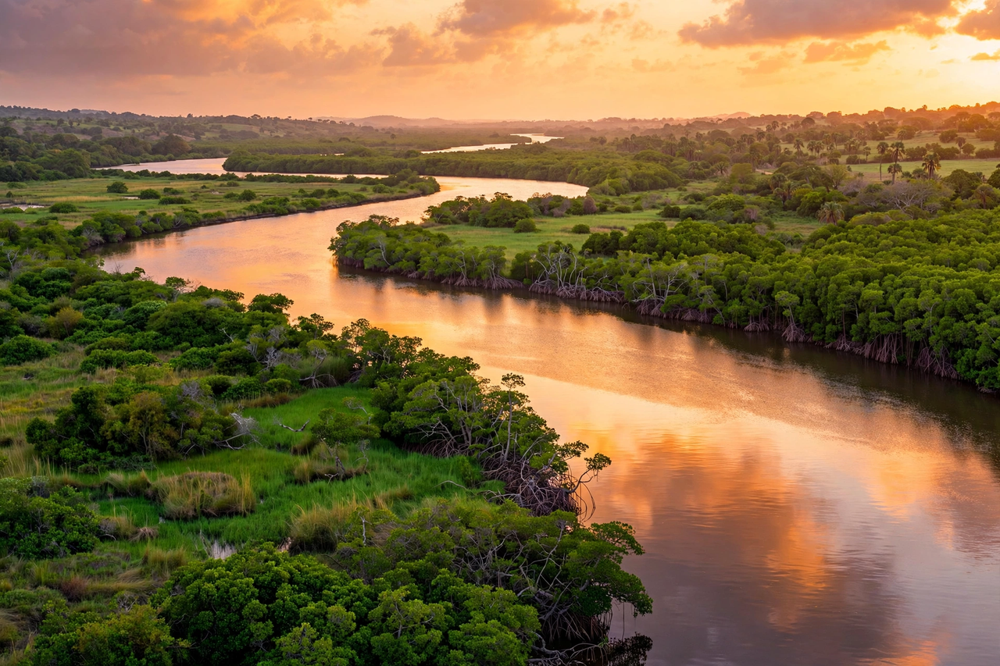

The Gambia River (formerly the River Gambra) is a major river in West Africa, running about 1,120 kilometres from the Fouta Djallon plateau in north Guinea westward through Senegal and The Gambia to the Atlantic Ocean at the city of Banjul.
The river is navigable for about half its length. The country of The Gambia consists of the narrow strip on either side of the river's lower reaches. Tributaries include the Bintang Bolong. James Island (Kunta Kinteh Island) in the river was a historic trading and slave-trading post.
Mangroves, hippos, crocodiles and rich birdlife inhabit its banks. The river supports fishing, irrigation and transport, and its basin is important for groundnuts and rice.
European explorers including Mungo Park travelled the river seeking the Niger. It formed a contested corridor for British, French and Portuguese trade.